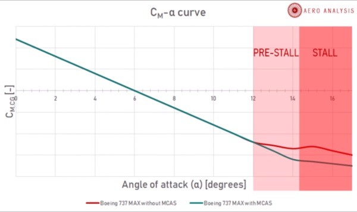

2019-09-02 08:16:00
（2019/08/29）今天有讀者在博客上問我，在中美貿易戰的大背景之下，中方對波音必須打擊到什麽程度才會讓美方感到疼痛。
首先，我個人認爲飛航安全才是最重要的議題，所以在波音修改氣動外型以根治737 Max的毛病之前，不應該准予放行。
如果迫於大環境的考慮，不能等上5、6年來修改氣動設計，那麽退而求其次，民航局最起碼應該花2、3年來重走一次完整的認證過程，以確認MCAS飛控軟件不再有明顯的問題，這也是我在正文裏的建議。
如果我們忽略以上的前提，只專注在波音本身對停飛的承受能力，那麽最關鍵的數據是737 Max的生產速率。
在737 Max被全球停飛之後，波音並沒有停止生產，而只是把產量從月產52架降低到42架。考慮到原本的計劃是在今年年中提升產量到56架，目前的產量其實是原有的3/4。最新的消息說波音正在研究是否再進一步降到月產36架，亦即略低於2/3.
不論如何，這樣的實際生產速率，乍看之下是很不合理的。因爲波音從航空公司等客戶所收的定金只有1%-5%，其餘是交機時才交付。照理來説，波音應該把產量大幅縮減，以避免消耗自己的現金儲備。
實際上波音並不是對復飛的時程有盲目的樂觀，而是另有苦衷。在過去30年，波音把可以分包的部件都分包出去了；這是因爲分包商的員工福利和其他間接費用遠低於波音自身，所以分包是削減成本的重要手段之一。737是薄利多銷的入門級產品，分包也最為徹底。
但是如此一來，這些中小型的分包商承受意外停工的能力也低得多。2/3是權衡他們的財力之後，維持他們不破產的底限。
當然波音不但有大量現金儲備，還有軍方生意的不斷資助，所以如果還能以2/3的產量再撐上一年，也不奇怪。
我個人的估計是，中方必須拖到2020年底左右，才能確定給波音嚴重的打擊。不過其實不應該在日曆上定下一個日子，只要觀察波音是否停產737 Max。一旦他因爲現金儲備耗盡而被迫停產，再多等一個季，就會有大批分包商開始倒閉。中方可以屈起指頭來算算倒閉的家數，到了一定的數目，就會嚴重影響波音的未來復產能力。届時即使737 Max通關，波音要恢復元氣，也是許多年之後的事了。
================================================================================
（2019/09/02）今天我看到波音在八月底發出的有關737 Max的最新公關資料；因爲目標讀者是航空公司和飛行員，所以内容專業性比較高，頗有一些乾貨，其中最重要的是下面這張圖：

橫軸是迎角，縱軸是爲了維持這個迎角飛行員必須施在方向盤的臂力（越往上是推，越往下是拉）；紅綫是737 Max氣動外形的自然結果，綠綫則是MCAS飛控系統原本應該干預而達成的表象；“Stall”就是失速，亦即迎角過高，氣流不再沿機翼上表面正常流動，使機翼產生的升力驟然下降，這在起飛和降落過程中，因爲沒有足夠的高度來改出，最為危險。
正常的靜穩定設計，要求圖中這條綫是Monotonously Decreasing（單調下降），而且最好是一條直綫。如果這條綫有了反轉，亦即坡度成爲正值，代表著飛行員沒有再用力拉桿，結果飛機的迎角卻加速增大，這正是我在前文裏所説的“失控性不穩定”。
圖中紅綫顯示了737 Max氣動外形所造成，未經飛控系統處理的自然結果。很明顯地在14°和15°迎角之間，坡度有了反轉，這正是我所説的“飛行包綫邊緣的一個靜不穩定區間”。因爲它剛好是在Pre-Stall（近失速）和失速區之間，對飛行品質的影響是很大的。
可笑的是，波音在同一份文稿裏面，居然一再强調MCAS不是爲了彌補這個不穩定性（因爲“沒有不穩定性”），而只是爲了維持與舊式737同樣的操作感覺，以避免飛行員重新認證的必要。這就好像說，我沒有殺人，只不過是參與了扣扳機的過程。
波音非要睜著眼睛說瞎話的原因，是美國聯邦飛行法規（Federal Aviation Regulation，FAR）第25條之171款，明文規定“The airplane must be longitudinally, directionally and laterally stable…”（民航飛機必須在全部三個軸向都是穩定的）。
我的建議仍然是，民航局對737 Max做完整的重新認證，尤其專注於迎角在14°和15°之間的縱向（Longitudinal）穩定性。
【後註一】根據九月3日出版的最新一期《Aviation Weekly》，歐洲主管民航事務的EASA（European Union Safety Agency）已經決定否決美國FAA（Federal Aviation Administration）容許737 Max被視爲舊版737簡單升級的建議，而準備自行對737 Max做重新認證。
目前這個所謂的“重新認證”會被執行到多麽完整的地步，還不清楚，不過至少FAA只要求飛行員花兩個小時用iPad來做737 Max升級訓練的計劃，會被改成若干小時的飛行模擬器經驗，這代表著采用737 Max的航空公司必須負擔更大的人事費用。
EASA要求更多飛行員訓練，是有其原因的：歐洲的通用飛行（General Aviation，亦即一般民衆自己飛著玩）遠遠沒有美國那麽普遍，所以飛行員的供應也嚴重短缺；目前的法規容許最低只有300小時實際飛行經驗的人來充當副駕駛，而美國的標準是750小時。爲了讓對航空事業不熟的讀者也明白300小時是多麽可怕，就連區區在下都有110小時的實際飛行經驗。
中國的環境在這方面和歐洲很相似，所以我雖然對中國的相關法規不熟，但是猜想中國籍的年輕民航飛行員經驗不足可能也是一個隱患。如果真是如此，那麽民航局對737 Max做格外嚴格的重新認證，就有了更多一層的理由。
【後註二，2025/02/09】剛剛在《Youtube》上看到一位航空視頻博主揭發又一項７３７Max的嚴重設計漏洞（參見《REVEALED: This System KILLS in 39 Seconds and Nothing is Being DONE!》），覺得他並不是杞人憂天，所以在此為讀者總結一番。
他的擔憂來自２０２３年的兩起事故，都是７３７Max－８遭遇鳥擊（亦即類似濟州航空空難，但那架７３７是舊式的NG，現在出問題的是Max），然後機艙内很快烟霧彌漫，造成乘員中毒以及飛行員視界被徹底遮擋等問題。經過調查，很快將原因追溯到Max新采用的Leap－１B引擎（空客A３２０裝備Leap－１A，和商飛９１９所用的Leap－１C，也基本是同一個型號、使用同樣的核心設計）相比上世代的CFM-５６，加裝了Load Reduction Device（LRD；Leap並不是第一個采用LRD的商用引擎，我查到至少有普惠的PW４０００和GE的ＧＥｎｘ更早裝備，但LRD本身不是問題，毛病出在配套的引氣系統上，所以問題可能集中在Leap、或甚至只限７３７Max上；參閲下面的更多細節）。其設計思維類似汽車的Crumple Zone潰縮區，是故意減弱若干部件的强度，以便在鳥擊之類的事故造成扇葉受損之後，犧牲自己，讓扇葉脫離轉子主軸，以避免整個引擎因失去軸對稱平衡而震動過大、自我拆解。這個思路本身並沒有什麽錯，問題在於（至少在Leap引擎的）實際設計中，LRD的自我犧牲會連帶導致整個潤滑油箱解體，１３公升的潤滑油一次性隨著壓縮機氣流進入燃燒室，然後劇毒烟霧通過７３７Max的空調系統彌漫機艙，在３９秒内就足以在駕駛艙達到致命毒性濃度。所幸已知的兩起事故中，飛行員都很快帶上面罩；而烟霧濃度較高的那個案例中，事發飛機很幸運地剛好配備了選裝的擡頭顯示器，距離肉眼很近，所以機長雖然連儀表板都看不見，卻能勉强維持安全飛行姿態，等待引擎關閉、濃烟散去。
這裏最主要的設計失誤責任，可能不在於Leap引擎的製造商CFM，而是波音居然沒有在LRD作用後、自動關閉空調引氣系統的考慮，也沒有在飛行員教程中，加入手動關閉空調引氣的訓練。偏偏NTSB的官方報告和建議還沒有正式發表，FAA也就可以習慣性地順勢不作爲，縱容波音拖延卸責。換句話説，這個潛在問題，很像２０１９年第一起MCAS墜機後幾個月、FAA和波音的推諉不作爲，隨時有可能導致又一起致命空難。希望草根輿論的反應，能夠及時喚醒監管單位，提早避免悲劇。
【後註三，2025/06/21】四個多月前，我在上面的【後註二】討論737Max的又一個設計缺陷，認爲其極爲嚴重，如果不及時糾正，必然會導致致命空難。本周NTSB終於達成同樣的結論，針對這個缺陷發出緊急安全公告（參見《NTSB issues rare safety bulletin about potential issues with Boeing 737 Max engines》），强烈建議波音修改設計，在完成修改之前，FAA應該强制培訓飛行員應對。
對此事華語輿論圈也有報導，例如《又涉波音！美机构要求升级737 Max发动机，全球航班拉响警报》，但這基本是前面英文主流媒體文章的直譯，欠缺深入分析，以致給予責任在於引擎供應商的印象（參見《觀察者網》留言欄）。事實上讀者應該參考【後註二】的結論，亦即失誤責任出在機體設計方波音自身。
【後註四，2025/07/12】上個月我在《龍行天下》節目（參見《為了以色列！川普一定打伊朗？》）中，討論了印度航空171班機墜毀事件。這是歷史上波音787的首次整機損失事故，因而有其獨特的重要性。當時信息混亂，能依據的只有兩段由地面拍攝的視頻，但在真正的專家（我曾推薦“型男機長瘋狂詹姆士”）眼中，已經足以推論失事源自雙發同時喪失推力（而不是例如“忘了放下襟翼”這類胡扯），然而發動機失效的原因卻難以確定。
過去這個月，網絡依然不斷出現以吸睛為唯一目的的虛妄論述，例如燃油污染等等。其實國際慣例要求監管單位在一個月内發佈初步報告（Preliminary report），理性知識份子在窮盡原始信息含量之後，就應該靜候官方報告再做論斷，而不是爲了滿足好奇心亂作臆測。這份初步報告（參見《Preliminary Report/Accident involving Air Indias B787-8 aircraft bearing registration VT-ANB at Ahmedabad on 12 June 2025》）在昨天由印度飛行事故調查局（Aircraft Accident Investigation Bureau，AAIB）公佈，内容超出所有意料，證明發動機並未失效，而是在升空後幾秒内的關鍵時刻被關停！其中尤其耐人尋味的是，一名飛行員詢問另一人爲什麽關機，收到明確否認。
一石激起千層浪，過去24小時，基本所有歐美航空博主都基於那份報告做出推論，認爲責任顯然不在波音，而在於飛行員亂操作。這固然是最簡單直接的解析，然而前面提到的“型男機長瘋狂詹姆士”卻力排衆議，指出黑匣子所記錄的“關停”是電路上的關停，而不是操控杆的機械關停（參見《印度航空｜初步報告出爐！其內容讓你跌破眼鏡》）；換句話説，除了操控杆被意外勾動之外，控制電路出現故障的可能性也不能被排除，這兩者都賦予波音若干事故責任：前者是設計不完美，後者則根本就是粗製濫造的絕對責任。不過我想指出詹姆士視頻中的細節問題：首先，他針對意外勾動的脚本提供了2018年的FAA通告（參見《FAA SAIB NM-18-33》），指出波音已經知道部分部件有這個危險，而且FAA並未强制要求更正，但我想提醒讀者，正常的787油門開關是能夠抵抗意外勾動的，而目前並沒有證據確認印度航空171班機上的油門開關不正常，所以我們必須存疑。其次，他針對控制電路故障提供了2020年波音的通告（參見《GEnx-1B Service Bulletin - 73-0097 R01》），證明787所用的GEnx-1B引擎控制電路（Electronic Engine Control，EEC）有已知的焊接缺陷；這裏詹姆士的論述就有很大的問題了，因爲EEC是引擎而不是駕駛艙的組件，也就是軍迷常説的FADEC全權數位引擎控制，雙發設計下兩個完全獨立的部件在一秒鐘之内連續故障非常不合理。換句話説，事故飛機駕駛艙内負責油門開關的電路有必要復查，但這個EEC故障通告牛頭不對馬嘴。
總之，在上述的初步報告發表之後，我們對事故原因有進一步的瞭解，但目前的信息仍然不足以絕對確認責任所在，大家應該靜候後續報告，再做論斷。而管理單位則應該追根究底，並儘快公佈真相，以保護公共安全以及政府公信力，而不是與航空公司（例如東航）勾結，壓著真相不發佈、不處理，這是典型以私害公的腐敗行爲，值得上級和監管單位注意。
【後註五，2026/01/20】自2019年博客揭露波音企業文化腐朽内幕之後，華語世界早已養成對其產品極不信任的共識。然而最近三四年的幾場737和787的重要空難，實際事故原因最終都落在駕駛、維修、地面設施等問題之上；博客秉承實事求是的原則，有一分證據説一分話，往往必須與群衆輿論唱反調。好在本周NTSB針對去年11月4日UPS2976空難，更新了報告（參見《UPS Flight 2976 Crash During Takeoff》），指出事故源自MD-11的發動機支架Engine Mount有普遍的疲勞裂縫問題，而且多年來被波音輕描淡寫地歸類為“無關飛航安全”，從而確認飛機生產商負有主要責任，博客終於不必再阻攔大家丟鷄蛋番茄。